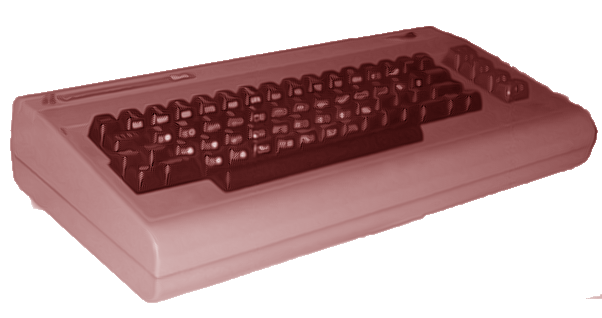

Route64
Retro galore…

The Commodore 64 was at least in Europe a phenomenon: In 1982 hardly anybody knew about it and even if you read the right magazines, information was thin and the price was high. In 1983 some people bought one, including me. I worked the whole summer to get the required money. I felt a bit alone, since at that time I was the only one owning such a computer. In 1984 the picture changed and the 64 got momentum. More and more people bought 64's and in 1985 nearly everybody had one including the pets. And – what a decadence! – in '86 single persons started to own two, and my grandmother bought one to store her recipes on…
This computer filled a gap and took the (male) youth by storm. Before the C64 the boys bored around with girls, motor bikes, model planes and Fischertechnik. After the infection they learnt line-number-BASIC, found 6502 assembler pretty cool and knew that tomorrow latest they will be rich because of tonight's tough hack selling millions of copies tomorrow…
Many years later this is one of the motivations to re-create that computer again. Compared to today's systems it is small, simple and straight, but a lot of fun to work with. And it laid the ground for me and many others to understand today's technology. Well, actually the road is long and winding from the Commodore 64 ROM to a modern Linux or Windows system, but it was a starting point.
From a more philosophical point of view, the work being done by countless hackers in the eighties should be conserved in some way. These guys invested part of their life time to make software on the Commodore 64. This investment shouldn't been thrown away because of advancing technology. Especially the games can be seen as one flavour of art and as such deserve conservation.
Route 64 is a Commodore 64 emulator implemented in Java™. When work started on Route 64 the fact that Java™ was the implementation language was interesting in itself. In the meantime the Java™ virtual machines as well as the standard hardware are much faster, resulting in the fact that even on slower systems the emulation runs at the same speed as an original Commodore 64. The remaining advantages of the Java™ implementation are finally that Route 64 should run on all systems that support a Java virtual machine, and that development is simpler and less error prone on Java™.
So let's go back in time, way back to 1983...
$Id: index.html 11 2008-09-20 11:06:39Z binzm $